Figure 2i · Passive stress relaxation
Five settings, 100 cells · Original plot

Reproduced simulation plots with published data comparisons where available. Kim et al. (2021)
144-setting grid · Original plot
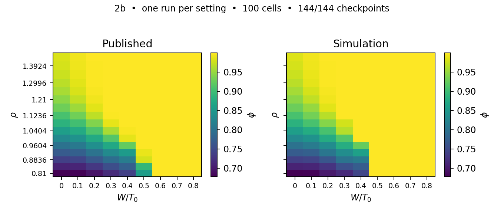
144-setting grid · Original plot
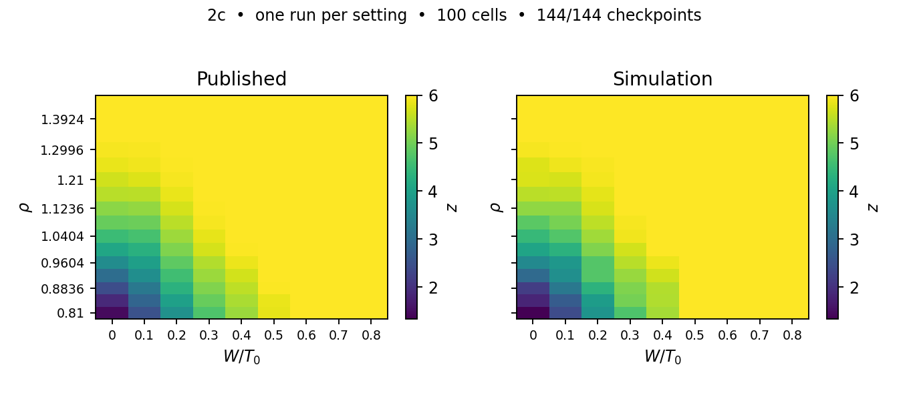
Selected settings, 100 cells · Original plot
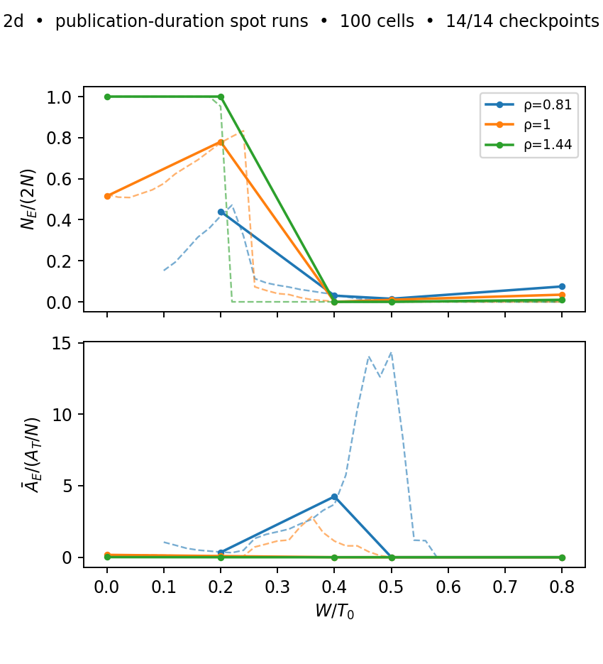
Hysteresis ensemble in progress · Original plot
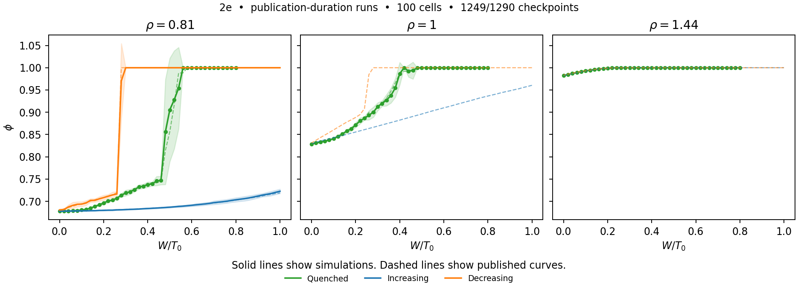
100-cell equilibrium ensemble · Original plot
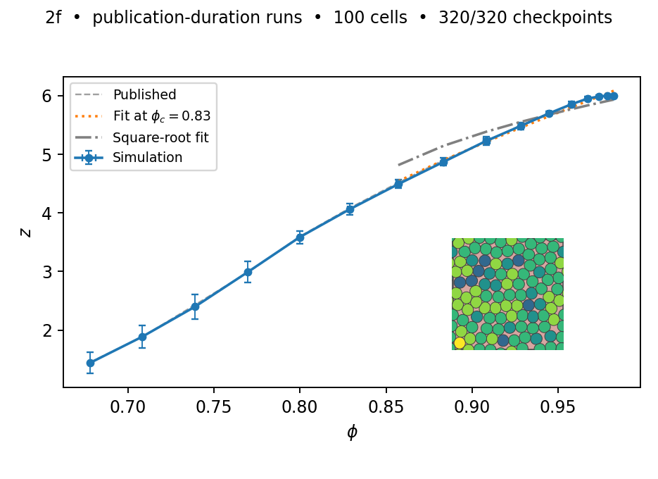
100-cell equilibrium ensemble · Original plot
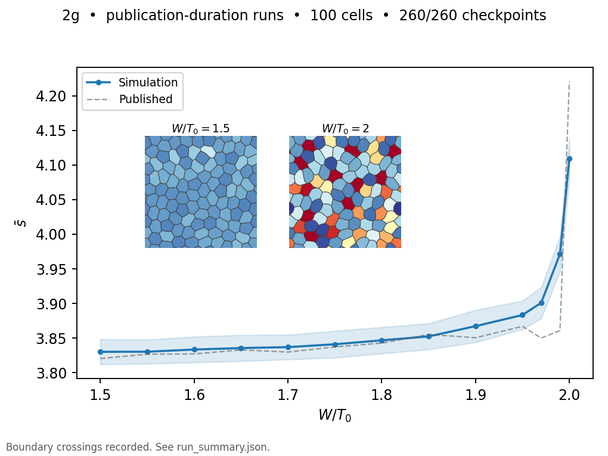
Five settings, 100 cells · Original plot
20 settings, 100 cells · Original plot

64 settings, 100 cells · Original plot
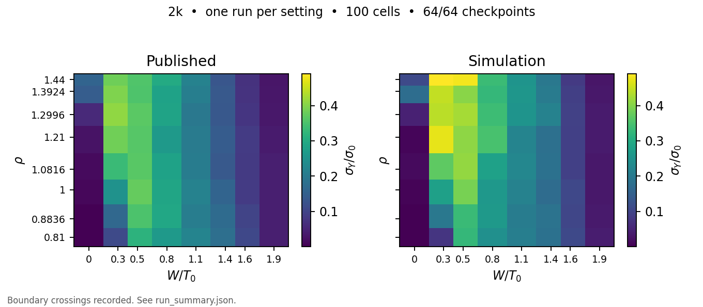
Six activities, 100 cells · Original plot

Separate plot of the published inset · Original plot

77 of 78 settings, 100 cells · Original plot

77 of 78 settings, 100 cells · Original plot

100 cells · Original plot
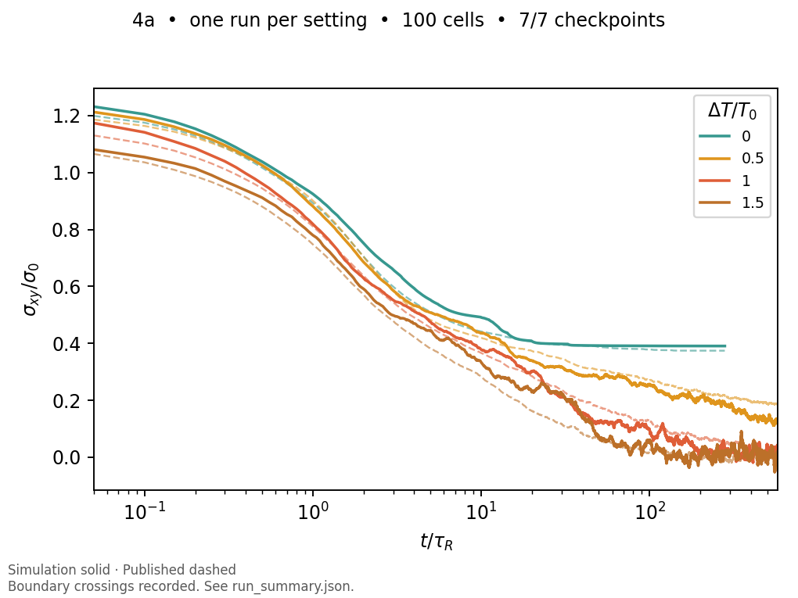
100 cells · Original plot
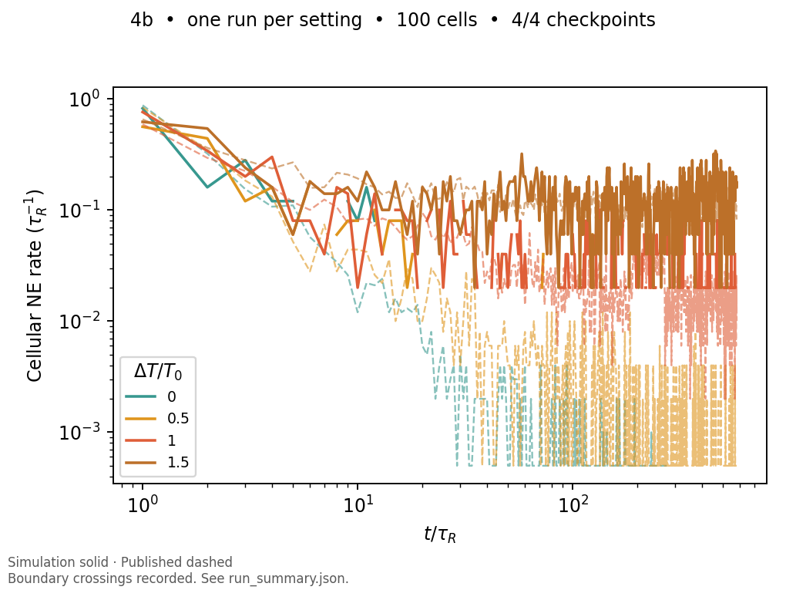
Selected settings, 100 cells · gaps where runs failed · Original plot
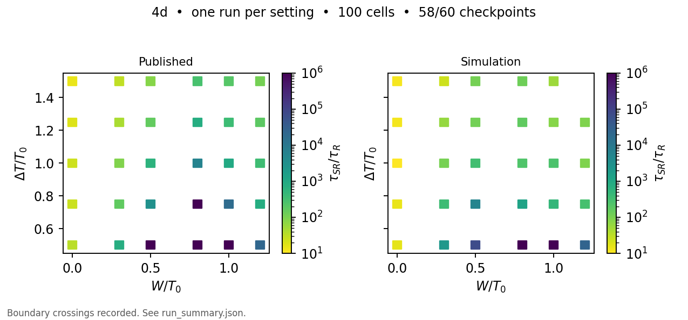
Selected settings, 100 cells · gaps where runs failed · Original plot
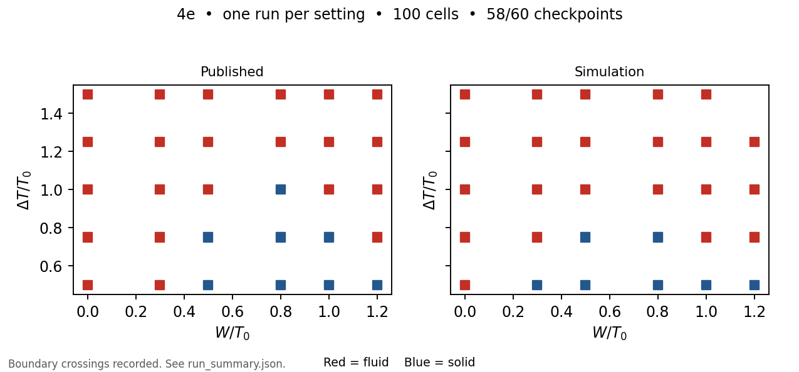
Selected settings, 100 cells · gaps where runs failed · Original plot
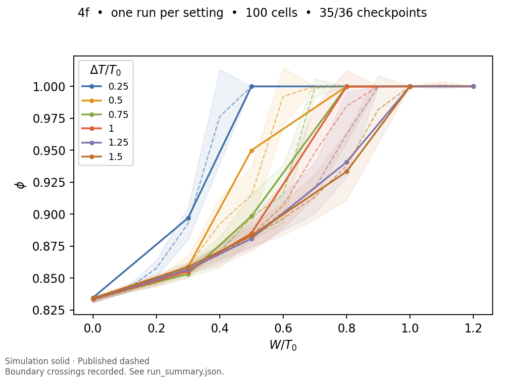
Selected settings, 100 cells · gaps where runs failed · Original plot
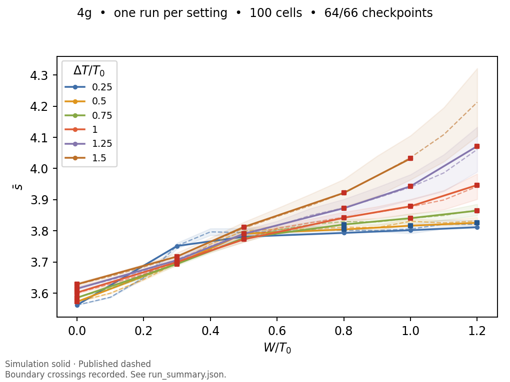